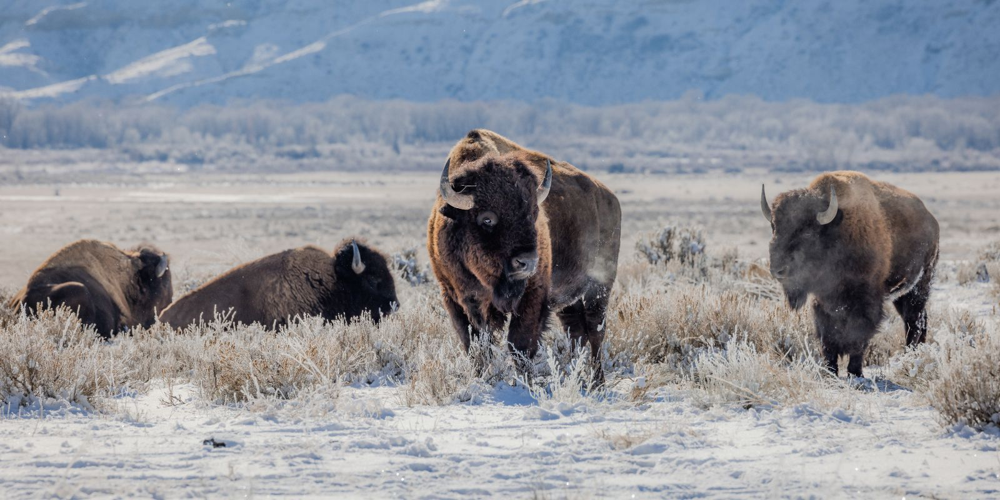
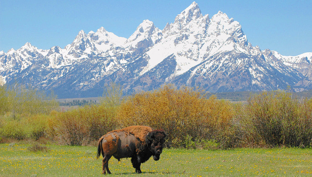
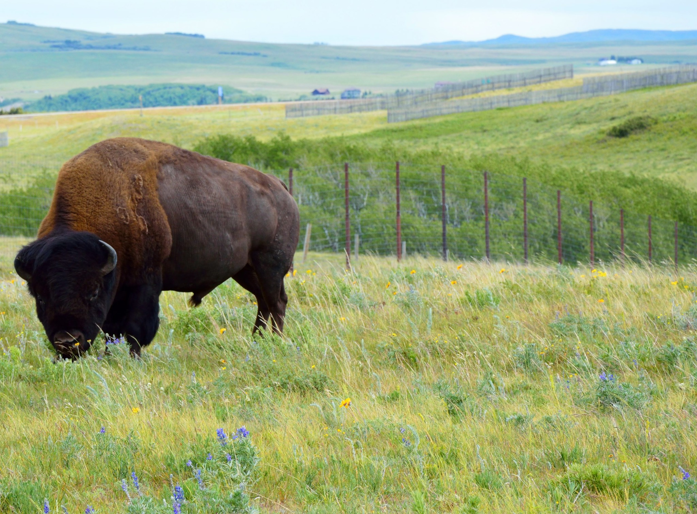
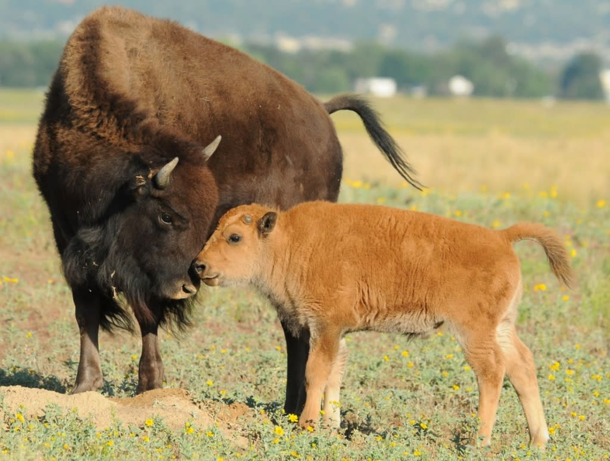

Restore and steward herds
Support the people establishing and caring for conservation herds.
Bringing businesses in Canada and the United States together to help return bison to their native range across North America.

Bison once roamed across much of North America. Today, many businesses still carry the bison on their signs, products, and logos. The Alliance brings those businesses together to support the animal that inspired them.
Read our mission

Support the people establishing and caring for conservation herds.

Protect grasslands and make room for bison in suitable parts of their native range.

Back restoration priorities set by Tribal Nations, First Nations, and Indigenous organizations.

Businesses in Canada and the United States can support conservation through five partnership tiers.
Explore partnership tiersSee how the leadership team brings together conservation, nonprofit governance, and business relationships.
Explore our leadershipHave a question about becoming a partner or a conservation effort the Alliance could support?
Contact the Alliance